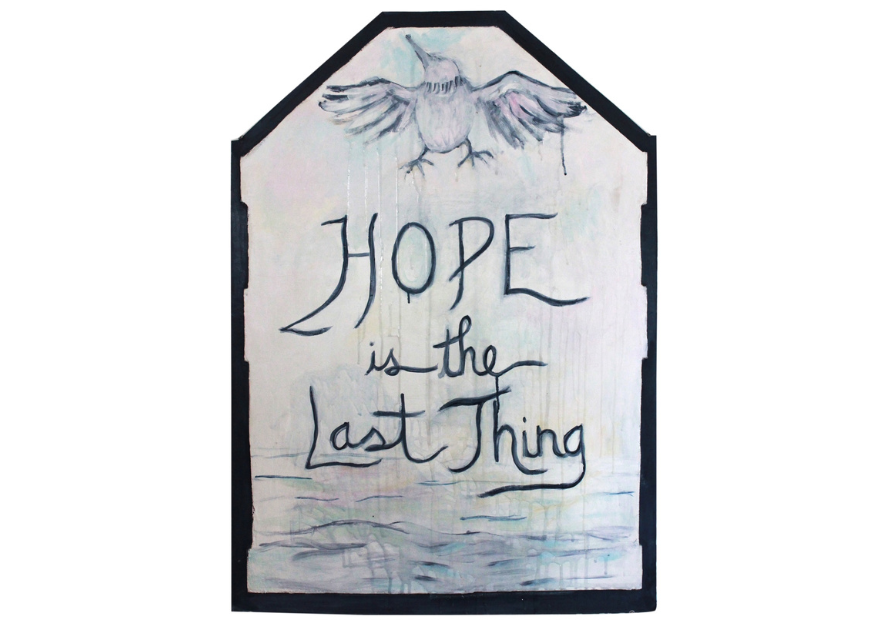

The Closing Reception of Hope Is the Last Thing by Rebecca Keller
The works in this exhibition are inspired by Epiphany Center for the Arts’ history as a church building, especially the dedicatory plaque hung around the corner in the hall. The grey and white text-based paintings are inspired by the plaque’s color and shape. But while these paintings initially evoke banal, cliched, vaguely uplifting “word art” in vacation rentals and hotels, the language in them quickly veers into denser, darker, trickier, more complicated interpretations.
Though intended to seem like ‘old sayings’ all the texts are original. They are inspired by Emily Dickinson’s “Hope is a thing with feathers” and the Greek myth of Pandora, who opened a forbidden chest and allowed all the evils in the world to fly out. Panicked, she slammed the chest closed, shutting the gift of hope inside.
The themes of wings, flight and transcendence are continued in the images of birds and boats. Traditional iconography in Christian churches, such images are metaphors for faith and belief. Here again, tropes associated with lightness and beauty reveal their darker side as the birds (our stand-ins?) are sometimes in danger, or in anguish, and boats drift unmoored, without direction. But others float or fly past, unconcerned and unaware.
These works refer to the difficulty of maintaining hope, and the insistence that we keep trying anyway. They call to mind the pain of distress as well as the possibility of grace.